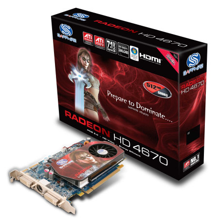
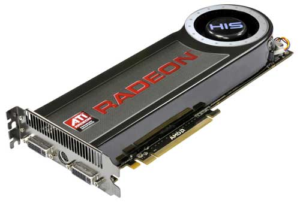

or youre not freggin rich?
I’m 14 and I’m paying for, and building, a £1500 computer(things are expensive here, besides monitors, which are dirt cheap).
I’m interested by the fact Nvidia’s prices have dropped DRAMATICALLY… I might just change from ATi to Nvidia, like I have AMD to Intel 
i got both xbox360 and a ps3, honestly i think most games released on both platforms seem to play better on the xbox360 (ive borrowed and compared etc) but i think the end of this race the ps3 will catch up to xbox360s all exclusive good titles with more innovative games sutch as MAG, because of its power to do so from the Cell processor.
i even installed linux on my ps3, an awesome feature.
the ps3 in this moment seems a waste , even people who want one should wait … to see if it’s worth , dark times we living in
I see Microsoft as a powerful, but very specifically focused console, any innovation past what is already there will be very minor and nothing that is a major innovation will get the support it needs to survive beyond its initial release. The same group that has given support to it and brought it what success it has will be the same group that keeps it from gaining any further success.
This is the console to get for excellent and visually stunning examples of gameplay you’ve already experienced 5 years ago.
Wii is a system with a lot of potential that has been squandered by 3rd parties having no vision for the future.
Nintendo has been releasing solid games consistently, and 3rd parties have been coming through with shoddy ports that made poor use of controls, or cut highly important features that were available on other consoles, thereby jading future prospective buyers from trusting developers other than Nintendo.
When they did make a decent game, they were badly marketed, or simply expected too much when they thought that they could get the same percentage of audience out of a truly mainstream console as what they would get from a “hardcore gamer” oriented console.
This will be the console that will make gameplay you’ve already experienced feel fresh again, and introduce new gaming concepts. Yet this will only happen if developers manage to do it right, which means many failed attempts to sort through.
PS3 seems to be in the worst position when it comes to its continued support, but this also brings with it the opportunity for more innovative and unique games to be attempted for the system. The biggest advantage I see for the PS3 is that it tends to keep it’s most compelling exclusives truly exclusive. You don’t see them filtering into PC availability like what the 360 has done with many of its best games. This system will be best purchased after it has run the course of it’s lifetime(provided the next gen system isn’t backwards compatible), where it will be at it’s lowest pricepoint and have its largest library.
PCs will continue to advance, but in the same way they have advanced in the last 20 years and no other way. Every affordable game for the PC will be designed for the Keyboard+mouse, and then support for a generic usb controller MIGHT be added as an afterthought.
I see Nintendo having the best advantage for the future. Because of how downplayed its graphics are now, it will be able to be noticeably improved with the next console release, without having to use the top of the line(expensive) hardware for the time. At the same time they will also have the most experience with the advantages and difficulty of implementing motion based controls, as well as having the best chance of implementing effective backwards compatibility(they already have motion based games) in order to have an established catalog of games for the next gen system from the very beginning.
i see the PC to have the greatest advantage , because developers know exact what their limits, they don’t really have those ,
nintendo wii feels more like an experiemnt so does ps3 , ps3 it’s a test of monster[at the time] hardware for gaming , wii is a experiment to see what market is better , the casual or the hardcore , the combination that we currently see is horrible , the xbox it’s deffinatly the “current” console , but these are fast times , i won’t give it even 2 years t’il it becomes dead ,
the ps3 has slight chances to pick up , but may be too late…
the PC is and always will have the best standing , ever , but damn the costs are irelevant to their real worth
it’s not really a contest
Worldwide sales figures
- Wii – 50 million, as of 1 March 2009 (2009 -03-01)[update][24]
- Xbox 360 – 28.0 million, as of 1 January 2009 (2009 -01-01)[update][25]
- PlayStation 3 – 21.3 million, as of 31 December 2008 (2008 -12-31)[update][26]
(yes it’s from wikipedia, but the sources are direct from the manufacturer)
Wii has nothing to do with testing to see which market is better, but which market needs to be hit first. You can hit the casual market, and then build up to more complicated games for “hardcore” gamers from that, but you can’t hit the “hardcore” market and then try to branch out to the casual market. It doesn’t happen, and if anything, the 360 is proof of that.
youre probably right , i did not get all your ideea
The main problem I have with PC gaming is whatever you spend, it will become obsolete in almost no time at all. I bought a PS2 in 2004 for £100, and it lasted me until last week, when I bought a 360 for £100. How many times would I have had to upgrade a PC in that time? I work for every penny I have, run a car and need to save money for university in September. Coupled with what I spend on large amounts of booze, there isn’t much disposable income left
I don’t see how people can spend £1500 on a computer, and if I’d suggested it when I was 14 my dad would have told me to get my head tested. I don’t think its worth that sort of money for something that will last a year or two until you need to put a new graphics card in it, or buy some more RAM. Then, with games at £35 a pop, its just an absolute rip-off. However, in the same way that people enjoy trainspotting, it doesn’t hurt anyone and its your money at the end of the day to spend how you like 
people are idiots
The point is that a computer can be used for much more than a console can (e.g. multimedia creation, publishing/office work, web/software development, communication, etc) and is generally significantly better than a console at other tasks (eg. media playback, web browsing).
All a console can do well is play games, and even then it’s only ideally suited to certain types of games. Console controllers are great for sports or platformers, for example, while FPS and RTS games are much better suited to mouse/keyboard control.
You also don’t need to spend ridiculous sums of money on PC hardware to achieve reasonable gaming performance. I built a system for a friend early last year for £700 and it’ll last him for a good while - it’s quad-core, has a 512MB 8800GT, and 4GB of RAM. My own system is much more modestly powered (and therefore also cheaper), and still holds up well - it’ll play BM beautifully, for instance. The really high-end stuff carries a price premium that massively outweighs the performance gains over mid-range gear.
He’s got a valid point, but he’s just not balancing his arguments properly.
first of all, he got a PS2 in 2004, that’s 4 years after it’s initial release. Generally the trend I’ve seen for PCs is that price gets cut in about half each year after its initial release, so if we start with a $1600 PC, in 1 year that’ll become $800, in 2 years, that’ll become $400, 3 years and I get $200, and 4 brings it to around $100.(though I’d likely need to get it secondhand just to be able to find a 4 year old PC as stores typically don’t keep them on the shelves that long)
So now that it’s been 4 years, I can get my $1600 for only $100, along with that, budget graphics cards (that means they aren’t top of the line, but get you about 90% of the performance of cards that are top of the line) usually run about $200 or so toss another $100 towards a ram upgrade and you’ve got a completely serviceable PC(ie, not cutting edge, but also not 4 years behind the technology curve either) for about $400. That’s just going by a store model.
If I were to use a basic PC to play HL1 10 years ago, I would probably have had to run it at 640x480 in software mode. Currently, I run that thing in OpenGL at 1400x900 without any framerate dropping at all. Lines are so crisp that I almost like them better than what HL2 looks like on my PC. I didn’t have to buy a updated re-release of the game for a full $40-$60 so that I could play it on the PS3 either, I paid $1 for it. A PS2 version of HL1 sure as hell won’t be doing that no matter what TV you put it on.
PC games themselves also tend to be scalable. So every dollar you invest into improving your computer not only works to increase what games you are capable of playing, but can also improve the visual quality and performance of the games you already own. While NEW PC games are generally even more expensive than their console counterparts, USED PC games tend to slash those prices to even lower than what the cheapest used console counterparts ever get down to.
Keep in mind, I’m saying this even though I’m primarily a console gamer.
When Cinema 2.0 becomes reality in games, watch out.
Imagine Half Life 3 looking like this:
PS: EVERYTHING IN THESE VIDEOS ARE Realtime CGI with a camera, models, physics and everything.
https://www.youtube.com/watch?v=CTh_aushEU4&fmt=18
Good points
I have a laptop that I use for work, internet, videos and music, because a console should be just for games. A lot of the browsers and that feel a bit gimmicky, and will never live up to their PC counterparts. I also use it for some older games, especially RTSs and FPSs, because nothing can beat the keyboard and mouse for that.
My PS2 was 4 years old when I bought it, and they were still producing games for it. If I bought a 4-year old PC, it would be fairly hard pressed to run any new or future releases. I also found that the second hand market for console games was much more lively, without the likes of Steam or DRM stopping you reselling. Buy an old game for a console, take it home, shove it in and it works, no problem. Buy an older game for a new PC, and chances are it won’t work on Vista without a lengthy google sesh. And because my laptop is primarily a work tool, I’d rather keep Vista.
The 360 I just bought might not be the most powerful machine on the market, but getting in from work, laying back and sticking some Oblivion in, £100 seems more than fair £700 is way more than I would ever spend on something that’s purely for entertainment. Even my car, a Renault Megane Coupe with 80,000 on the clock only cost £800
i agree ,
the computer industry it’s vicious for it’s first-release false worth of the technology , then some one comes up using half the material at twice the capacity and the prices fall , i think in matter of PC’s it’s better to wait , in the console industry even if in the times that we live on it’s wise to wait a little , you have to hurry to buy , coz the person feels good to have that jewel in his house as soon as it’s released , unoptimised games also tend to misguide the pople who need pc , though some help i managed to finish oblivion with 100 fps indoors , al shading off on a fx 5200 , 1.5 athlon . 512 rams , and i had problems running the pure versions on 256 ATI x1050 , 512 , 3000 procesor , if it’s a tactic , the tactic for pushing computers forward it’s negative IMO , 3 months ago i baught a ps2 with like 70 dolars , 2 joysticks moded , i enjoyed it’s downfall as it’s weell defined and will have my times with it , don’t care much for industry , still , games are still being published for it , it’s still a money printing machine ,also , if i’d have the money , i am a hardcore gamer on my capabilities , if i had the money i’d go for a secondhand computer with multiple GPU and stuff , don’t really enjoy this new eyecandy based video cards , exemple that is
Yeah I agree. Just look at the Radeon 4670, it looks simple and it works great! My brother is playing Fallout 3 at 70fps on it at full detail in 720p, it’s not eye candy and it’s only 100$. Everyone says haha no way that tiny card? it’s not the looks that matter, it’s the performance. (If they would make the newer video cards at a reasonable size then I’d buy it but 10" to 13")? the length of the higher end cards is just ridiculous. sometimes it makes me think of the voodoo 6000. lol.

Radeon 4670 (perfect size)

the GTX 295

and the Radeon 4870x2
(are way too long like the Voodoo 5 6000):

That is one thing I notice about PC gamers; they tend to underestimate just how hard keeping track of all the different types of issues you need to know and keep track of, to tell if any particular upgrade you try to get to your PC will actually work, actually is for the average person. Like these video cards. they might be compatible with your video card slot and even supported by your OS, but you might not actually be able to FIT IT IN your PC.
They’re like car hobbyists. They know all the inner workings of their machine and read articles and know how to read and distinguish part numbers and could probably take their car apart and put it back together again. However the average car owner anymore often doesn’t even know how to change his own oil or wiper fluid or switch out a flat tire for a spare, they only got it because they need it to DRIVE AROUND IN.
and wow, those looked great…
Until absolutely ANYTHING moved. They need some serious work on their movement animations.
Yeah they overdid the blur in the video. Here’s some videos AMD explaining how crazy it is.
Cinema 2.0
https://www.youtube.com/watch?v=x5yVjHaJ0PI&fmt=18
https://www.youtube.com/watch?v=XnihU4zCXe8&fmt=18
Lightstage and Otoy
https://www.youtube.com/watch?v=wBbWH_m1Re4&fmt=18
Cloud Computing
It wasn’t even the blur, everything just moved completely unrealistically. It was like watching star trek, when the ship takes a hit and everyone dives all over the fucking bridge to convince people there was actually an impact of some sort.